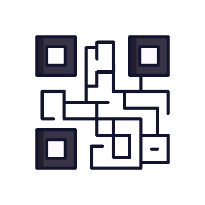

<ion-header>
    <ion-toolbar>
      <ion-item color="transparent" class="navbar_home" lines="none">
        <h1 class="titulo_home">Reg<strong>i</strong>str<strong>App</strong></h1>
        <ion-button fill="clear" slot="end" (click)="redirigirLogin()">
          <ion-icon name="log-out-outline" size="large" style="color: white; padding-top: 5px;"></ion-icon>
        </ion-button>
      </ion-item>
    </ion-toolbar>
</ion-header>

<ion-content [fullscreen]="true" class="ion-padding">

  <!-- Se activa cuando la aplicación esta registrando el la asistencia al escanear con el qr -->
  <div id="cover-spin"></div>

  <!-- Se activa cuando esta obteniendo el nombre del usuario logeado -->
  <div id="IdCargando">
    <span class="loader"></span>
  </div>

  <div id="IdContenido" style="display: none;">
    <!-- Estructura de la pagina home -->
    <br>
    <div class="saludo_home">
      <h1>Bienvenido {{nombreUsuario}}</h1>
    </div>
    <br>
    <div class="box_subtitulo">
      <p>Escanea el código QR para registrar tu asistencia</p>
      <br>
      
      <br>
      <ion-button (click)="scanearQR()" class="btn_ingresar_scan" expand="full">
        <div style="display: flex; gap: 5px;">
          <ion-icon name="camera" size="xxl" color="ligth"></ion-icon>
          Abrir camara
        </div>
      </ion-button>
      <br>
    </div>
  </div>

  <div id="btn_stop">
    <div class="scanbox"></div>
    <ion-button (click)="stopScan()" class="btn_ingresar" expand="full">Detener scaneo</ion-button>
  </div>

</ion-content>